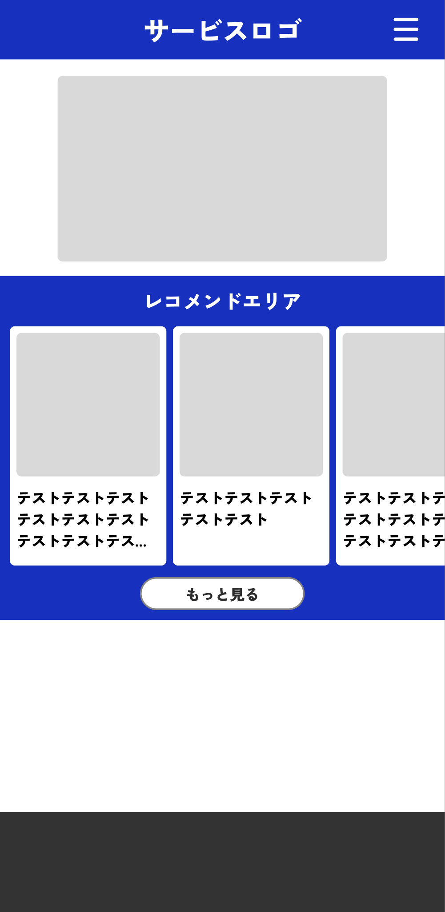
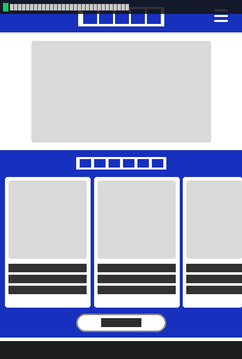

📌 今回取り上げたもの
現在の案件でCursor×Figmaを使ってコーディングしている。2026年2月にClaude CodeがFigmaと公式統合したことを受けて、同じサンプルデザインを使い両ツールで実際に実装を試み、Figmaとの相性を多方面から比較した。
評価軸は「デザイン再現度」だけでなく、「何回の指示で完了できるか（指示コスト）」「どの情報が自動で取れるか」「プランによる制限の有無」も含めた。
📝 実験結果の要約


| 項目 | Claude Code | Cursor |
|---|---|---|
| 使用したMCPツール | get_design_context（1回） | get_metadata + get_screenshot（制限で途中終了） |
| 色の取得 | デザイントークン名ごと正確取得（--青: #1730bd） | スクリーンショットから推定 |
| フォント情報 | 「Zen Kaku Gothic New Black」まで自動取得 | 推定値含む可能性あり |
| デザイントークン | CSS変数名（--青）まで取得 | 独自に命名（--color-primary等） |
| 指示コスト | URLを渡すだけ（1往復） | 段階的に確認・指示が必要 |
| HTML品質 | デザイン忠実・機能的 | セマンティックHTML（aria属性・button要素等）が丁寧 |
| 双方向連携 | コード→Figmaへの書き戻しも可能 | Figma→Codeのみ |
両ツールとも基盤となるFigma MCP Serverは同じ。差が生まれる要因は「どのMCPツールを最初に呼ぶか」と「そのツールがどれだけ情報を返せるか」にある。
Claude Codeのget_design_contextは1回の呼び出しで構造・色・フォント・デザイントークンを網羅して返す最も強力なツールで、これを最初の1手に使えることが大きい。
今回のCursorでは、Figma MCPのStarterプランの呼び出し制限によりget_design_contextまで到達できず、色・フォントは推定値になった。同じプランで同じ制限がClaude Codeにもかかる点は同条件だが、Claude Codeはその1回を最も効果的なツールに使う設計になっている。
💡 自分の考え・業務への活用案
試してみて、再現度の差よりも「指示コストの差」の方が実務での体感差になると感じた。Claude Codeは「FigmaのURLを渡して」の一言で、デザイントークンの取得からコード生成まで完結した。Cursorは各ステップで確認・介在が必要で、その分Figmaプランの呼び出し枠も消費しやすい。
Claude Code推しの立場から正直に言うと、特に以下の2点が実務で効いてくると思っている。 1つ目は、デザイントークン名（この場合は「--青」）まで自動取得して変数として使えること。 2つ目は、実装後にコードをFigmaキャンバスに書き戻す双方向連携があること。デザイナーとのレビューがその場で完結する流れは、普段のやり取りコストをかなり下げられる。
現在の案件は引き続きCursorで対応する。ただ次の案件ではClaude Codeで試したい。
なおget_design_contextの呼び出し頻度はFigmaのプランに依存するため、チームのFigmaプラン（OrganizationまたはEnterprise）を確認してから導入するのが先決。